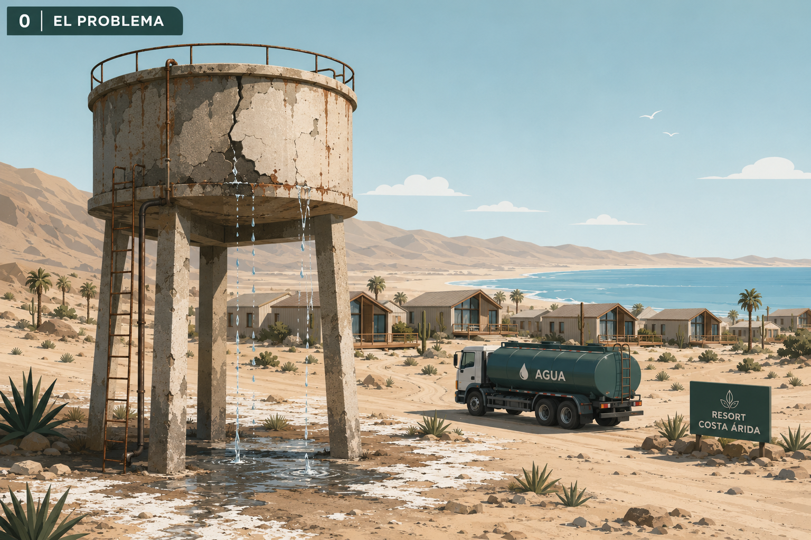
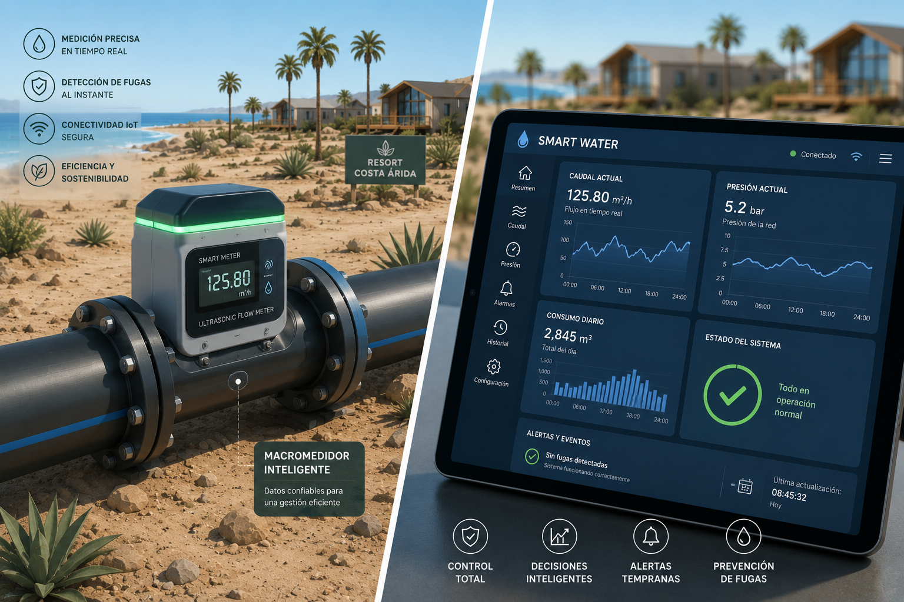
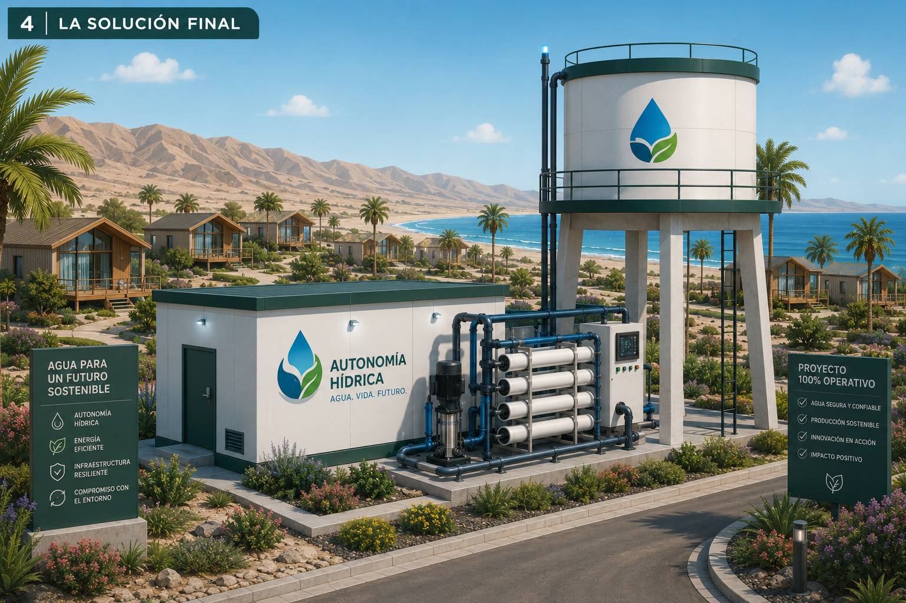
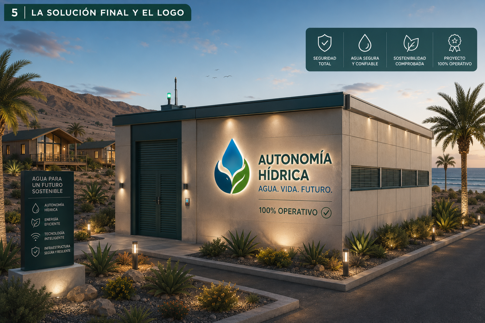

00El Problema

Escasez y Fugas Invisibles
El estanque deteriorado pierde agua continuamente mientras camiones aljibe recorren kilómetros para abastecer el complejo. Un modelo insostenible en la zona más árida de Chile.
Planta Desalinizadora de Ósmosis Inversa · Red HDPE Sectorizada · Macromedidores Smart Water IoT

El estanque deteriorado pierde agua continuamente mientras camiones aljibe recorren kilómetros para abastecer el complejo. Un modelo insostenible en la zona más árida de Chile.

Equipos de ingeniería instalan tuberías HDPE de alta densidad en zanjas excavadas. Resistencia a la corrosión, larga vida útil e infraestructura 100% sostenible.

La planta desalinizadora de ósmosis inversa produce 35 m³ de agua limpia diarios directamente del mar. Cero camiones aljibe, cero dependencia externa.

Macromedidores ultrasónicos IoT reportan caudal y presión en tiempo real al dashboard centralizado. Detección instantánea de fugas antes de que se vuelvan críticas.

La solución completa: planta desalinizadora, estanque elevado, red HDPE sectorizada y sensores IoT operando en armonía. Agua segura, producción sostenible, impacto positivo.

El complejo luce orgulloso el logo del proyecto iluminado al atardecer. Seguridad total, agua confiable, tecnología inteligente e infraestructura resiliente para las próximas décadas.
Pérdida de presión detectada.
Gravedad:
Aspectos positivos y fortalezas
Puntos a considerar y mitigar
Evolución futura del proyecto